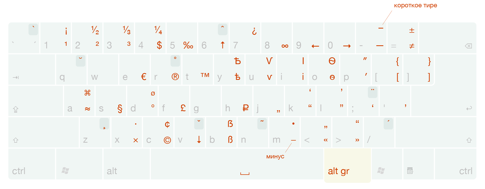

Установка типографской раскладки Ильи Бирмана в Linux Mint 17.3
Решил попробовать что такое типографская раскладка и с чем её едят — прочитал несколько статей, и, в конце концов, решился попробовать. Для русского языка самой популярной является типографская раскладка Ильи Бирмана. Она позволяет удобно вводить редкие символы, такие как длинное тире, или «ёлочки».
Расположение символов можно оценить на изображении ниже:

Установка
Так как я пользуюсь Linux Mint, то и опишу установку именно для него. К сожалению, автор не поддерживает Linux по-умолчанию, поэтому мы воспользуемся альтернативной раскладкой «Рукби», которая основывается на типографской раскладке Ильи Бирмана и включает в себя её версию для «Линукса» (на данный момент это версия 2.0.4).
- Идём на битбакет и скачиваем архив с раскладкой отсюда
- распаковываем
tar xf rukbi-3.5.tar.bz2 - выполняем
sudo install/install— разумеется внимательно ознакомившись с содержимым скриптов, чтобы удостовериться что там нет rm -rf /, например. - открываем настройки клавиатуры
- на вкладке «Раскладки» добавляем две новые раскладки — «Английская раскладка Ильи Бирмана» и «Русская раскладка Ильи Бирмана»
- щёлкаем на кнопку «параметры» и открываем «параметры раскладки клавиатуры»
- В списке «Клавиша для выбора 3-го ряда» выбираем значение «Правая клавиша Alt»
- У меня после этого сбросилось переключение раскладок, поэтому в списке «Переключение на другую раскладку» я вручную отметил «Левая Alt+Левая Shift»
Готово! Можно проверять в любом поле для ввода текста. Чтобы напечатать длинный пробел, например, необходимо нажать «правый альт + минус», а для стрелки вправо (→) «правый альт + ноль».
Читайте также
Для тех, кому интересно почитать информацию по теме, прикладываю список ссылок
Комментарии